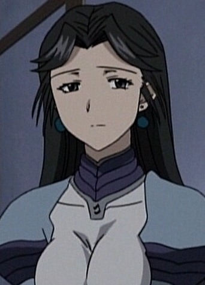

Ruri Asano is a Japanese voice actress.
- Gender: Female
- Birthday: February 18, 1974
| |
Ruri Asano is a Japanese voice actress.
|
|
|---|
|  | Jil | Scrapped Princess | Jil is a member of the Obstinate Arrow of the Kingdom of Leinwan. |
Go Back to Main Page |
Go Back to Homepage |
|
|
|
OR |
|